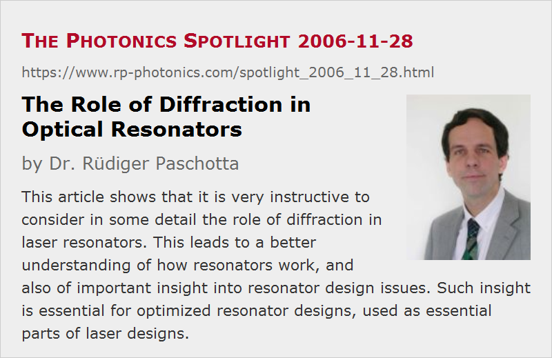

The Role of Diffraction in Optical Resonators
Posted on 2006-11-28 (revised on 2006-11-29) as a part of the Photonics Spotlight (available as e-mail newsletter!)
Permanent link: https://www.rp-photonics.com/spotlight_2006_11_28.html
Author: Dr. Rüdiger Paschotta, RP Photonics Consulting GmbH
Abstract: This article shows that it is very instructive to consider in some detail the role of diffraction in laser resonators. This leads to a better understanding of how resonators work, and also of important insight into resonator design issues. Such insight is essential for optimized resonator designs, used as essential parts of laser designs.

Ref.: encyclopedia articles on optical resonators, resonator design, modes, Gaussian beams, laser beams
We all know the phenomenon of diffraction from experiments where light is diffracted at some small aperture. However, diffraction also occurs during free-space propagation of a laser beam, particularly where the beam radius is small. Diffraction modifies the curvature of the wavefronts and subsequently the beam size. Also, it is related to the Gouy phase shift.
It is very instructive to consider the role of diffraction within optical resonators, in particular in laser resonators. As a simple example, consider a linear resonator consisting of a flat and a concave (focusing) laser mirror. In each resonator round trip, the concave mirror has a focusing effect, while diffraction acts in the opposite direction. For a Gaussian beam with a focus on the flat mirror and a suitable beam radius, the focusing effect of the concave mirror is exactly offset by the effect of diffraction during propagation; the corresponding light field is called the fundamental mode of the resonator. Such modes exist for a wide range of mirror curvatures (within some stability zone), because the strength of the defocusing effect of diffraction can be adjusted via changes in the beam radius.
As a rule of thumb, diffraction in a laser resonator becomes strong when the Rayleigh length, evaluated for the smallest occurring beam waist, becomes shorter than the resonator length. If the Rayleigh length becomes really short, focusing optical elements within the resonator are normally required; one will often have a nearly collimated beam in some part of the resonator, and a strongly focused beam in another part.
By a sort of coincidence, typical solid-state lasers require beam waists with a size such that the Rayleigh length is of the order of the resonator length, or somewhat below. This leads to well working resonator designs with a substantial, but not extreme variation of beam radius. However, some high power lasers, particularly Q-switched ones, require very large mode sizes in the gain medium and on all cavity mirrors, while keeping the resonator short, so that diffraction effects can be very weak. “So what,” the beginner may say, “isn't it nice to have a nearly constant beam radius throughout the resonator?” Unfortunately, it isn't:
- First of all, any change of focusing conditions, e.g. via power-dependent thermal lensing, now leads to strong changes in the mode radius, because only those can sufficiently modify the weak diffraction effect so as to compensate the change of focusing.
- Second, the Gouy phase shift becomes quite weak, and the consequence of that is that the resonances of higher-order modes nearly coincide with that of the fundamental mode. Therefore, mode coupling to higher-order mode becomes strong (nearly resonant), and the beam quality can easily be degraded.
- Third, large modes become sensitive to misalignment.
As a result of all of that, the laser performance and robustness can really suffer. So we better have some substantial amount of diffraction in our resonator!
This discussion shows that a thorough understanding of diffraction effects and their consequences brings important insight into issues of resonator design, in particular into typical physical limitations and the principles of common solutions. (By the way, having powerful resonator design software is no substitute for that kind of knowledge!) Particularly for short resonators with large modes, severe problems can result from too weak diffraction effects. Of course, to some extent one can solve these by arranging for a tight focus somewhere insight the cavity. The art of resonator design (as an important part of laser design) is to find the optimum balance of all the relevant effects so as to optimize a combination of properties such as suitable mode sizes at certain positions, minimum alignment sensitivity, compactness, minimum number of components, etc.
It is a great mistake (and a very widespread one) to ignore all these issues and to use poorly designed resonators (sometimes literally resulting from trial and error) for laser products!
This article is a posting of the Photonics Spotlight, authored by Dr. Rüdiger Paschotta. You may link to this page and cite it, because its location is permanent. See also the RP Photonics Encyclopedia.
Note that you can also receive the articles in the form of a newsletter or with an RSS feed.
Questions and Comments from Users
Here you can submit questions and comments. As far as they get accepted by the author, they will appear above this paragraph together with the author’s answer. The author will decide on acceptance based on certain criteria. Essentially, the issue must be of sufficiently broad interest.
Please do not enter personal data here; we would otherwise delete it soon. (See also our privacy declaration.) If you wish to receive personal feedback or consultancy from the author, please contact him e.g. via e-mail.
By submitting the information, you give your consent to the potential publication of your inputs on our website according to our rules. (If you later retract your consent, we will delete those inputs.) As your inputs are first reviewed by the author, they may be published with some delay.
|  |
If you like this page, please share the link with your friends and colleagues, e.g. via social media:
These sharing buttons are implemented in a privacy-friendly way!